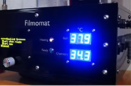
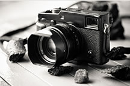

Жизнь нью-йоркских танцовщиц глазами Гордона Паркса
Шоу-бизнес без девушек - не бизнес
Снимки танцовщиц были одними из первых экспериментов Паркса с
цветной фотографией — до этого он главным образом работал в черно-белом цвете. Кадры получились
одновременно эмоциональными и прозаичными: в конце концов, несмотря на веселье и блестки,
showgirl — это просто
Новости

Школьник создал автоматизированную машину для
проявки пленки
Как-то незаметно прошла серьёзная дата: 25 лет назад на рынке впервые оказался
программный продукт под названием Photoshop!
Свою историю нынешний фотошоп в принципе отсчитывает с 1987 года, когда американский
программист Томас Нолл (Thomas Knoll) разработал программку Display для

Анонсирована топовая версия профессиональной
камеры Fujifilm X-Pro2
Как-то незаметно прошла серьёзная дата: 25 лет назад на рынке впервые оказался
программный продукт под названием Photoshop!
Свою историю нынешний фотошоп в принципе отсчитывает с 1987 года, когда американский
программист Томас Нолл (Thomas Knoll) разработал программку Display для
Основы студийной фотосъемки. Светоформирующие насадки, часть II